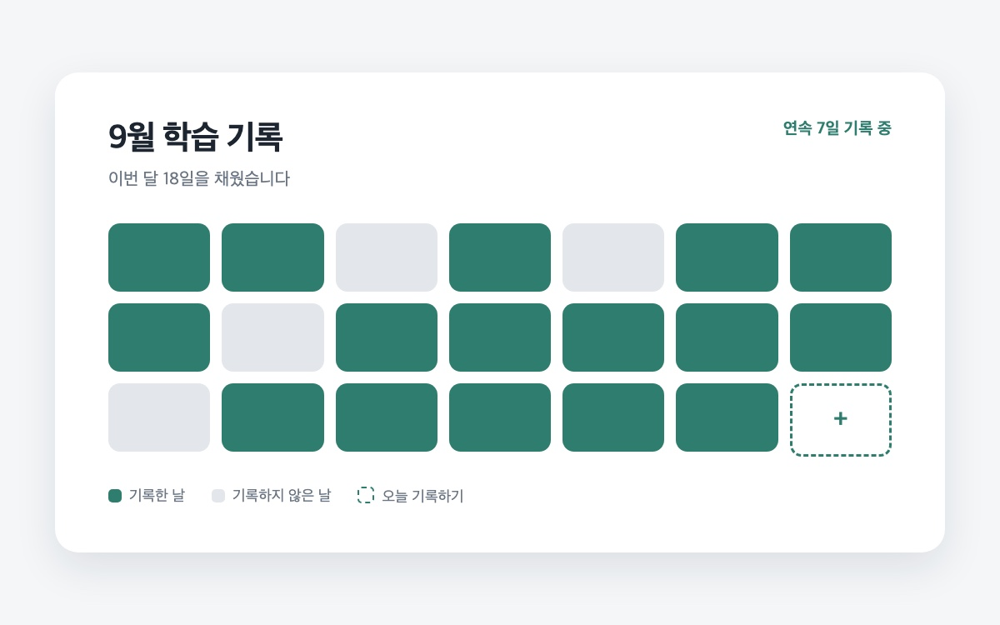

서비스 소개
계획표 대신, 채워진 칸
공부를 시작할 때는 누구나 계획을 세우지만 며칠만 지나면 계획표는 열어보지 않게 됩니다. 기록이 남지 않으니 얼마나 했는지도, 잘하고 있는지도 알 수 없습니다.
하루한칸은 기록을 한 줄로 줄인 학습 습관 트래커입니다. 과목과 공부한 시간만 남기면 달력의 칸 하나가 채워지고, 채워진 칸이 늘어나는 것으로 꾸준함을 확인합니다.

하루 10분, 오늘 공부한 것을 한 칸씩 채워 학습 습관이 끊기지 않게 합니다.
공부를 시작할 때는 누구나 계획을 세우지만 며칠만 지나면 계획표는 열어보지 않게 됩니다. 기록이 남지 않으니 얼마나 했는지도, 잘하고 있는지도 알 수 없습니다.
하루한칸은 기록을 한 줄로 줄인 학습 습관 트래커입니다. 과목과 공부한 시간만 남기면 달력의 칸 하나가 채워지고, 채워진 칸이 늘어나는 것으로 꾸준함을 확인합니다.
